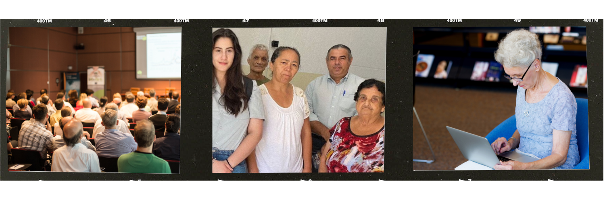

Aqui, será concedido acesso a projetos sociais e técnicos concebidos e desenvolvidos por mim. Através desses
projetos, será possível ter acesso aos meus valores pessoais e profissionais, bem como discernir minhas
habilidades técnicas e progressos.
Projeto social de extensão integrado à Universidade Cidade São Paulo
No ano de 2023, pensei e desenvolvi um projeto social: "Facilitando o Acesso: Como a Tecnologia Pode
Aprimorar a Qualidade de Vida da Comunidade ao Viabilizar o Uso para Todos".
Neste estudo, realizamos uma visita a uma instituição comunitária localizada em São Mateus, periferia de São
Paulo, com o propósito de conduzir entrevistas com seus membros. Notamos que a maioria desses membros
consistia em indivíduos mais velhos, os quais careciam de habilidades técnicas para lidar com a tecnologia
contemporânea. Em resposta a essa demanda identificada, desenvolvemos um programa de treinamento
personalizado com o intuito de fornecer-lhes assistência adequada.
Criamos 2 propostas de treinamento. Leia um trecho:
"Proposta 1:
Como estratégia inicial, sugerimos a implementação de programas educativos abrangendo o manuseio
desses dispositivos, acompanhados da adoção de softwares de acessibilidade de fácil utilização,
incluindo inteligências artificiais capazes de promover diálogo em língua de sinais, como
exemplificado.
Proposta 2: Treinamento para voluntários em prol da segurança pessoal ao utilizar a internet.
Almejamos promover um programa de treinamento voltado para a segurança pessoal durante a utilização
da Internet. Este programa visa instruir os participantes sobre estratégias preventivas relacionadas
a fraudes eletrônicas, vírus em dispositivos móveis e a realização segura de transações bancárias
online.
O escopo da iniciativa é desmistificar o universo virtual, fornecendo orientações fundamentais para
a utilização segura dos recursos disponíveis na Internet, particularmente direcionadas àqueles que
não mantêm uma familiaridade próxima com o ambiente online."

Feira Profissional Universidade Cidade São Paulo 2023
Em 2023, participei de uma exposição profissional na qual tive a oportunidade de desenvolver, liderar e realizar uma palestra sobre minha experiência enquanto mulher no âmbito da tecnologia e programação. Este evento proporcionou uma plataforma para discutir e promover a diversidade de gênero e inclusão no mercado de trabalho tecnológico, visando encorajar o fluxo de mulheres neste setor. Através da minha apresentação, busquei destacar a importância da representatividade feminina, bem como transmitir valores de diversidade e inclusão, que são fundamentais para o avanço e aprimoramento da comunidade tecnológica.
Projetos de Programação Web
Para facilitar o acesso aos Projetos de programação e desenvolvimento, irei disponibilizar meu GitHub.